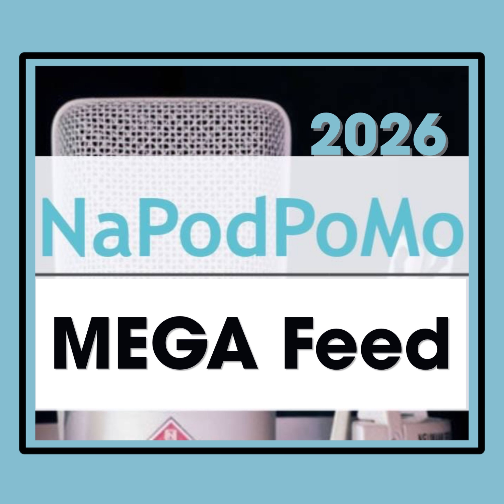

Optional beta test
An optional beta test of the NaPodPoMo 2026 MEGA Feed, featuring November episodes from participating podcasters. This experimental feed is separate from the official NaPodPoMo 2026 MEGA Feed. Try it in Pocket Casts and share your feedback to help shape future versions. Audio remains on each creator's original host.
To follow the MEGA Feed, copy the RSS link into a podcast app that supports direct RSS subscriptions. If your app asks for an OPML file or URL, use the OPML import link. It adds the combined MEGA Feed as one subscription.
The challenge is open throughout November. As participating feeds are added, their eligible November episodes appear through the same subscription.
In Pocket Casts, enable Profile → Settings → Appearance → Use episode artwork to display each podcast’s main cover when available. Artwork display varies by app.
Learn about the challenge at NaPodPoMo.org.